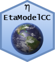

EtaModelCC 
Overview
EtaModelCC is a R package to access high resolution climate change projections over Central and South America of PROJETA plataform (CPTEC/INPE) using the Eta model. The EtaModelCC is developed by Mosaico research group at University of Passo Fundo (Brazil).
Getting started and citation
If you are just getting started with EtaModelCC we recommend starting with the description of PROJETA project and the paper:
- Hölbig et al. (2018). PROJETA platform: accessing high resolution climate change projections over Central and South America using the Eta model. Agrometeoros, 26(1): 71-81. DOI: 10.31062/agrom.v26i1.26366.
When the EtaModelCC package is used in the development of academic works and publications, please use the following bibliographical reference in the references:
- Dezordi, M. et a. (2018). An R package to access climate change data for South America regionalized by the Eta Model of CPTEC/INPE. In Anais do IX Workshop de Computação Aplicada a Gestão do Meio Ambiente e Recursos Naturais. Porto Alegre: SBC. DOI: 10.5753/wcama.2018.2934.
Instalation from GitHub
if (!require(devtools)) {
install.packages("devtools")
}
devtools::install_github("holbig/EtaModelCC")Documentation
More documentation is available in the vignette in your R session vignette("EtaModelCC").
Use of Projeta Data
When the Projeta data are used in the development of academic works and publications, please use the following text as references for the CPTEC/INPE data source:
“Data generated by the CPTEC/INPE and available on the platform Projeta”
and the bibliography references:
Chou, S.C, Lyra, A. , Mourão, C. , Dereczynski, C. , Pilotto, I. , Gomes, J. , Bustamante, J. , Tavares, P. , Silva, A. , Rodrigues, D. , Campos, D. , Chagas, D. , Sueiro, G. , Siqueira, G. , Nobre, P. and Marengo, J. (2014) Evaluation of the Eta Simulations Nested in Three Global Climate Models. American Journal of Climate Change, 3, 438-454. DOI: 10.4236/ajcc.2014.35039.
Chou, S.C, Lyra, A. , Mourão, C. , Dereczynski, C. , Pilotto, I. , Gomes, J. , Bustamante, J. , Tavares, P. , Silva, A. , Rodrigues, D. , Campos, D. , Chagas, D. , Sueiro, G. , Siqueira, G. and Marengo, J. (2014) Assessment of Climate Change over South America under RCP 4.5 and 8.5 Downscaling Scenarios. American Journal of Climate Change, 3, 512-527. DOI: 10.4236/ajcc.2014.35043.
Lyra, A., Tavares, P., Chou, S.C., Sueiro, G., Dereczynski, C.P., Sondermann, M., Silva, A., Marengo, J., Giarolla, A. 2017. Climate change projections over three metropolitan regions in Southeast Brazil using the non-hydrostatic Eta regional climate model at 5-km resolution. Theor Appl Climatol. DOI: 10.1007/s00704-017-2067-z.
-
Terceira Comunicação Nacional do Brasil à Convenção-Quadro das Nações Unidas sobre Mudança do Clima
Meta
Please report any issues or bugs.
License: BSD-3 clause
Get citation information for EtaModelCC in R by typing
citation(package = "EtaModelCC").